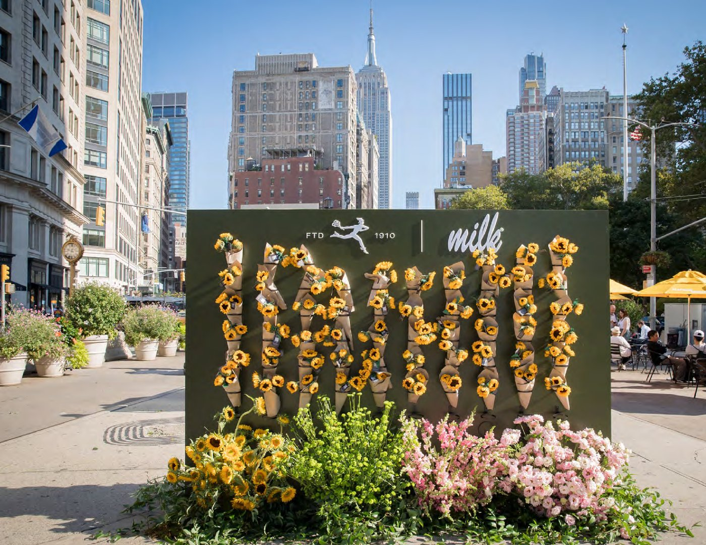
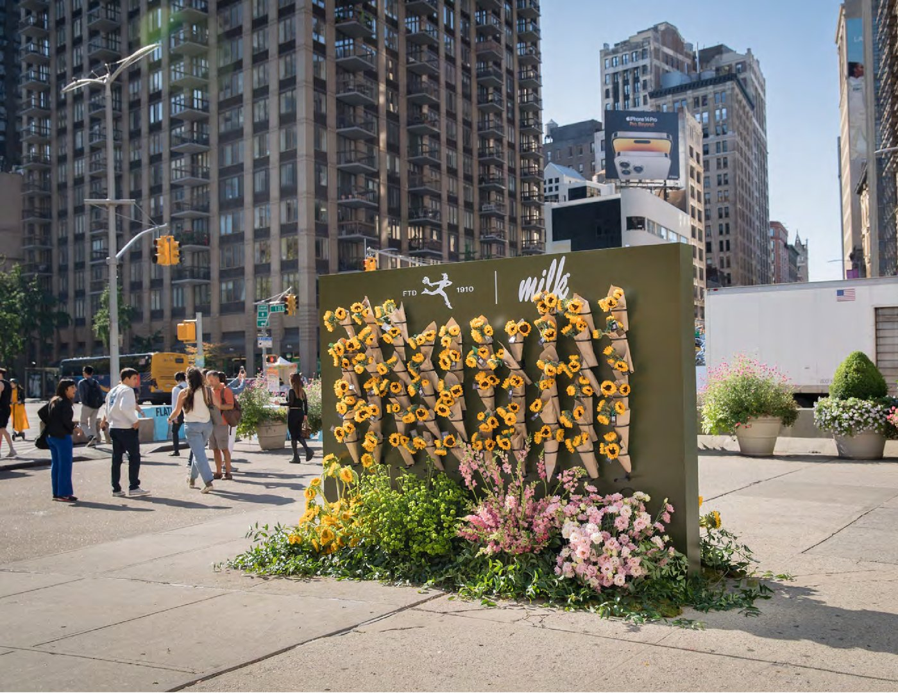
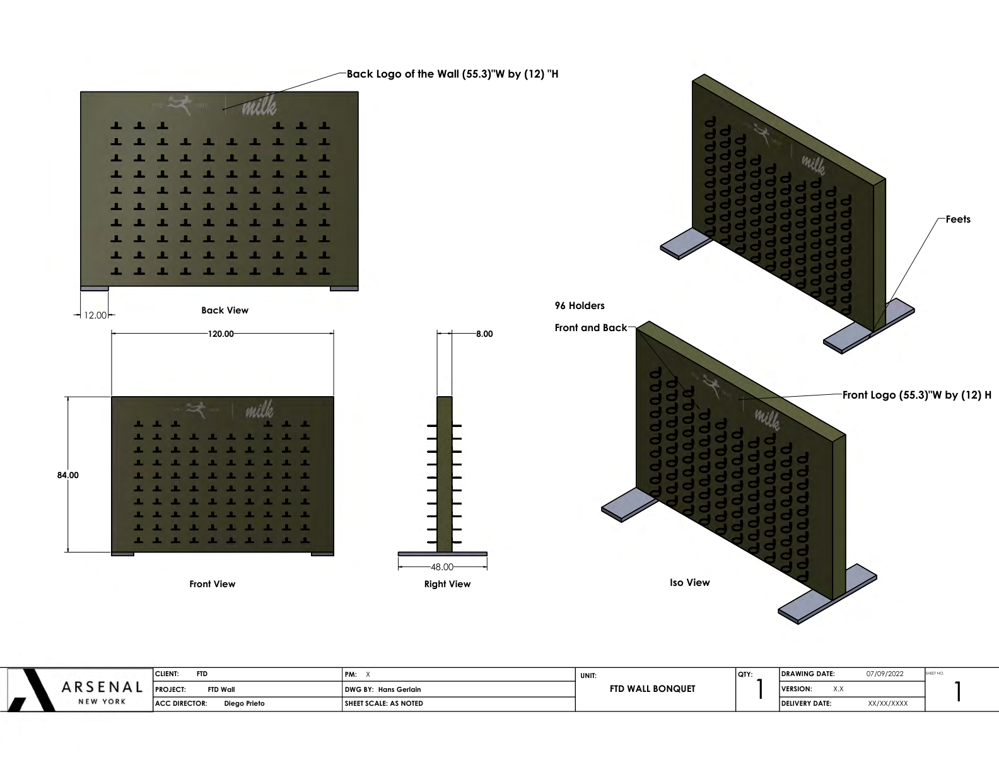
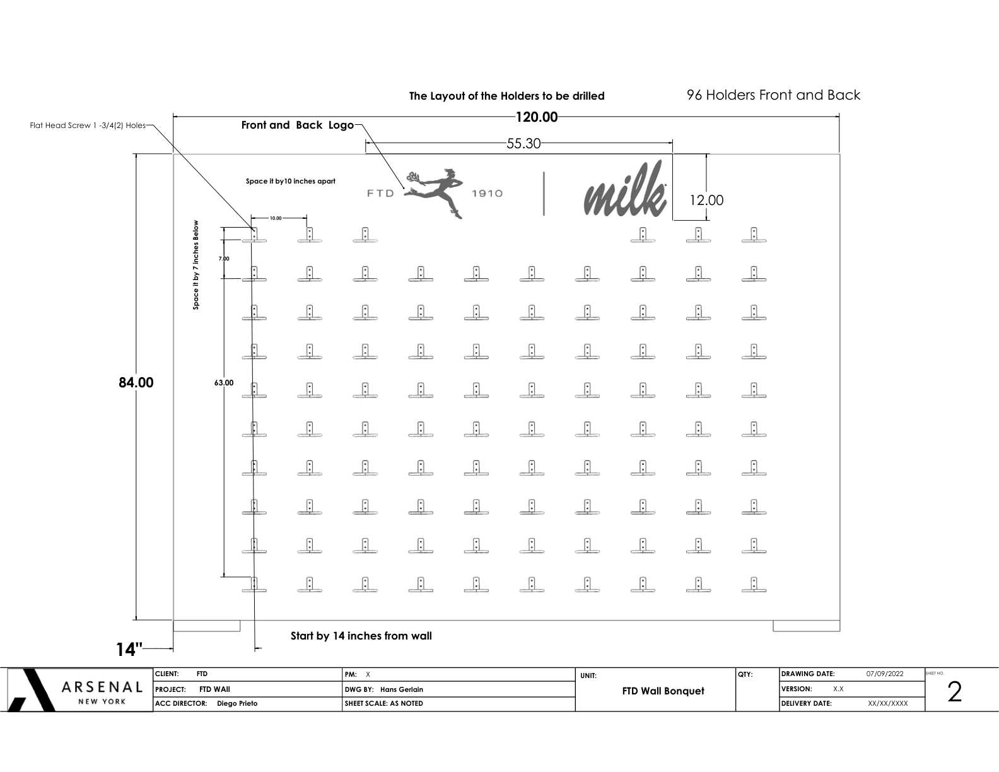

Featured Work




FTD Wall of Flowers
Pop-up display stand with custom shop drawings — installed at Madison Square Park, NYC
Skills & Expertise
CAD Software
- AutoCAD
- Fusion 360
- SketchUp
- SolidWorks
Design & Rendering
- KeyShot 3D Rendering
- Adobe Creative Cloud
- 3D Printing (Cura)
- Technical Documentation
Professional Skills
- Project Management
- Client Relations
- Production Coordination
- Estimating & Quoting